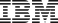

Scaling Gameplay Experience for Visual Agents through Environment–Player Co-Development
We co-develop verifiable game environments with the Coding Player and VLM Player, turning their gameplay into training data for visual agents.
Authors

Game2Player-4B and Game2Player-9B are trained on 15,707 trajectories with 1,563,640 steps and 307 hours of play, from 396 games and 2,251 tasks. The Coding Player played 12,856 of them and the VLM Player 2,851.
Games provide diverse environments for training and evaluating visual agents on perception, planning, and control. Existing efforts often collect agent experience from a small set of games or rely on human gameplay data. More scalable methods are needed to collect interaction experience across diverse games, with well-defined tasks and verifiable outcomes, for developing visual agentic intelligence.
We introduce Game2Player, a pipeline that co-develops game environments and players. A Builder adapts web games and defines tasks grounded in game state; the Coding Player and VLM Player attempt these tasks and report problems for repair. Using this pipeline, we build a growing collection of verifiable environments covering 568 games for data collection and construct PlayerBench, a held-out benchmark spanning 50 games and 287 tasks that presents greater challenges than GameWorld.
We use instrumented environments, code policies, and VLM Players acting as teachers to collect diverse game tasks and trajectories at scale for visual policy distillation. We train a 4B VLM agent with progress-weighted SFT, assigning greater weight to steps that advance task progress. The agent plays from pixels, achieving progress scores of 49.5 on GameWorld and 31.1 on PlayerBench with thinking on, up from 26.9 and 15.9 for the base model.
Game-state-based task definitions and progress and success checks for web games.
An iterative loop that jointly refines game environments and player policies through gameplay feedback.
Fast code policy rollouts and VLM demonstrations for training a 4B visual agent with progress-weighted SFT.
PlayerBench has 50 games and 287 tasks held out from training. Each model plays every task once, with at most 100 steps. On GameWorld, the other models' results are the ones published with that benchmark, under the same budget of 100 steps. Game2Player models play both benchmarks through our harness.
| # | Model | Progress | Success |
|---|
| # | Model | Progress | Success |
|---|
Each game goes through a loop of agents. The selects games based on their source, engine, and access to game state. The adapts each game for offline play, exposes game state through game_api.js, and defines verifiable tasks using engine-specific skills for Unity, Flash, or PICO-8.
The are then tested on every task by the , which develops code policies using game state, and the , which plays from screenshots. Problems return to the Builder as : a key press may have no effect, or a policy may need a state variable that is not yet exposed. The Builder checks the recorded trajectories before repairing the environment or task checks; the players then retry tasks and refine their policies.
The loop produces two outputs. Games enter the collection after validation through gameplay. We retain gameplay trajectories as , recording observations, actions, and task progress for visual policy distillation.
The three gameplay trajectories below were collected by code policies developed by the Coding Player. Each follows a task defined by the Builder, with start conditions, progress, and success checks grounded in game state.
Each trajectory pairs observations and actions with verifiable task progress. Progress is computed from game state at each step, providing task feedback for environment validation and visual policy distillation.
The task instruction shared by the Coding Player and VLM Player.
Task completion from 0 to 1, computed from game state at each step.
Variables used to track the task, such as level or score, recorded alongside gameplay.
Key presses, clicks, and pointer movements synchronized with observations and game state.
Select a game to inspect its trajectory. Video and inputs appear on the left; the task, progress, and game-state traces appear on the right. Scrub the timeline to inspect a step; the vertical line marks the current time.
The develops Python code policies that read the game state exposed by the Builder and execute actions in real time. Once written, these policies support fast, repeated rollouts for task validation and scalable trajectory collection.
The observes screenshots, reasons about the task, and selects actions without access to internal game state. The game pauses during model inference. VLM Players acting as teachers provide visual demonstrations for policy distillation; both player types return feedback to the Builder.
Scroll or select a player to compare its observations, decisions, and actions.
The Coding Player view shows gameplay, exposed state, and executed policy code. The VLM Player view shows gameplay, screenshot context, reasoning, and actions, including pauses during inference.
We fine-tune Qwen3.5-4B and Qwen3.5-9B on gameplay recorded by Game2Player and test them on PlayerBench, the 50 games held out from training, and on GameWorld, 34 games from another benchmark. Every model plays each task once with the same seed and at most 100 steps. Progress is averaged over a game's tasks and then over games, and success is the share of tasks completed. With thinking on, a model can write up to 32,768 tokens per step, and 512 with it off. The model trained only on Coding Player gameplay is prompted without the short note, as in its training data.
Qwen3.5-4B and Game2Player-4B play the same PlayerBench task with the same seed, both with thinking on. Each gets 100 steps. In our harness a step can tap a key, hold keys for a chosen time, or chain a few timed key presses. Qwen3.5-4B almost never sets a hold time: only 1% of its key presses carry one. Game2Player-4B learned to, and sets one on 47% of them.
@misc{game2player2026,
title = {Game2Player: Scaling Gameplay Experience for Visual Agents
through Environment–Player Co-Development},
year = {2026},
howpublished = {GitHub project},
url = {https://github.com/game2player}
}We plan to release the Game2Player code and trained models. Their licenses will be specified in the respective repositories. Gameplay data release remains under review pending copyright and redistribution considerations. We do not distribute instrumented game environments due to third-party licensing and permission constraints. All third-party games and assets remain subject to their respective owners’ rights and licenses.